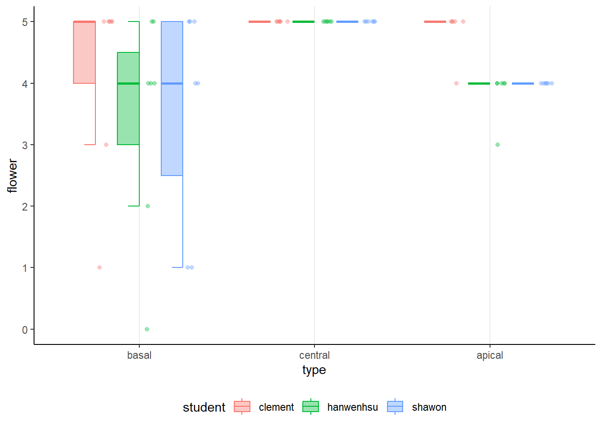

range_vector <- 1:10
for( i in range_vector){
i+3
}Week9: Grain development v
R-intermediate
Welcome to the nigth course! You will learn more aboutdata visualization:
Learning goals
- Warm up for final presentation
- Data type based story telling
github
Discussion: Warm up for the final presentation!
- How the shape of dataframe is linked to data visualization?
- What is the component of for loop? how to examine the function body? Do you need
print()to see the result?
- What is important when you want to combine the dataframes row-wise?
- What is the format (columns and data type of columns) of self-collected ear data?
- Which plot type could be suitable for visualization?
- What are the logic of visualization oriented analysis? Could you list the possible steps?
- What are essential elements for reproducible analysis? For example, you have a r script which read the files in the folder and plot a plot.
df <- read.csv("example.csv")
df %>%
ggplot() %>%
geom_point(aes(x=x,y=y))
Excercise:
- share your code on github and share it with others.
1 Story telling: Warm up for final Presentation


2 Exercise with student’s data
practice with files from data/student.
library(magrittr)
df<- map_dfr(list.files("../data/student"),~{
student_name <- .x %>% strsplit("_") %>% unlist() %>%
.[4] %>% sub(".xlsx","",.)
file<- xlsx::read.xlsx(paste0("../data/student/",.x),sheetIndex = 1) %>%
`colnames<-`(stringr::str_to_lower(names(.)))%>%
`colnames<-`(gsub("kernal","kernel",names(.))) %>%
`colnames<-`(gsub("spikes","spike",names(.)))%>%
`colnames<-`(gsub("plot.id","plot_id",names(.))) %>%
mutate(student=student_name)
})
df %<>% mutate(var="Capone",plot_id=159) %>%
.[!grepl("na.",names(.))]
df %>% glimpse()Rows: 57
Columns: 8
$ var <chr> "Capone", "Capone", "Capone", "Capone", "Capone", "Capone~
$ plot_id <dbl> 159, 159, 159, 159, 159, 159, 159, 159, 159, 159, 159, 15~
$ spike <dbl> 1, 2, 3, 4, 5, 6, 7, 8, 9, 10, 11, 12, 13, 14, 15, 16, 17~
$ flower <dbl> 1, 3, 5, 5, 5, 5, 5, 5, 5, 5, 5, 5, 5, 5, 5, 5, 5, 5, 4, ~
$ kernel.full <dbl> 0, 2, 2, 2, 3, 2, 2, 1, 2, 2, 2, 2, 2, 2, 2, 2, 3, 2, 1, ~
$ kernel.half <dbl> 0, 0, 0, 0, 0, 0, 0, 0, 0, 0, 0, 0, 0, 0, 0, 0, 0, 0, 0, ~
$ kernel.small <dbl> 0, 0, 0, 0, 0, 0, 0, 0, 0, 0, 0, 0, 0, 0, 0, 0, 0, 0, 0, ~
$ student <chr> "clement", "clement", "clement", "clement", "clement", "c~2.1 How to make it a bit more beautiful?

click for answer
df %>%
group_by(student,spike) %>%
ggplot(aes(flower,spike,color=student))+
geom_point()+
geom_path(alpha=.5)+
facet_grid(~student)+
theme_classic()+
theme(strip.background = element_blank(),
panel.grid.major.x = element_line(),
legend.position = "none")2.2 How to place kernel-related traits in subplots?

pivot_longer()to collect kernel-related traitsfacet_grid()
click for answer
df %>%
pivot_longer(starts_with("kernel"),
values_to = "kernel",
names_to="kerneltype") %>%
group_by(student,spike) %>%
ggplot(aes(kernel,spike,color=student))+
geom_point()+
geom_path()+
facet_grid(kerneltype~student)+
theme_classic()+
theme(strip.background = element_blank(),
panel.grid.major.x = element_line(),
legend.position = "none")2.3 classify spikelet based on position
the spike of the main shoot was dissected to count the total number of floret in
basal 1/3 spikelet from the bottom)
central (middle 1/3 of spikelets)
apical (1/3 spikelets from the top)
try to clssify each spike into three classes based on their position.
challenge
- add new column called
typeusingmutate() cut()could be useful, which column you should apply to?- what will you get when you pass the result of
cut()toas.numeric()? - use
case_when()to re-calssify the result of step 3. - based on which columns should you classify? what are your group columns for
group_by?
click for answer
df %<>%
group_by(student,plot_id,var) %>%
mutate(type=cut(spike,3) %>% as.numeric(),
type=case_when(type==1~"basal",
type==2~"central",
T~"apical"))go to ?@sec-realclass for more practices.

How to plot this half-box plot?
click for answer
library(ggpol)
p <- df%>%
ggplot(aes(type,flower,fill=student))+
geom_boxjitter(aes(color=student),alpha=.4,
jitter.shape = 21, jitter.color = NA,
jitter.params = list(height = 0, width = 0.04),
outlier.color = NA, errorbar.draw = TRUE)+
theme_classic()+
theme(strip.background = element_blank(),
panel.grid.major.x = element_line(),
legend.position = "bottom")
print(p)2.4 how to change the order of the box plot?
set the type as factor and arrange the levels from basal to apical.
